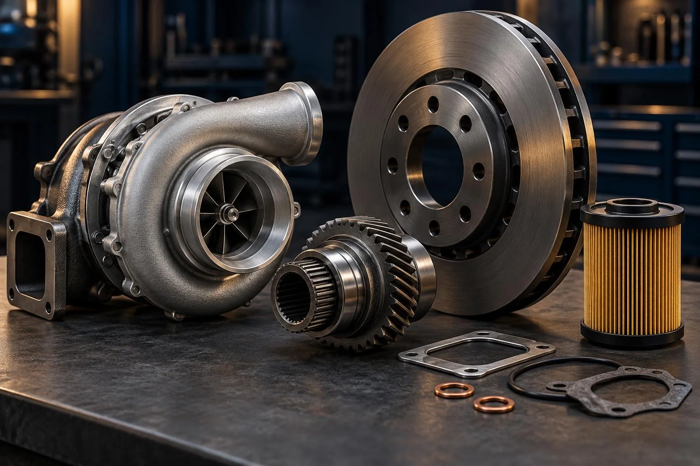

Piese pentru camioane Ford Trucks
Piese originale și aftermarket pentru Ford Cargo, F-MAX, F-LINE și alte camioane Ford Trucks. Pentru motor, ambreiaj, frâne sau revizie, pornește cu o cerere clară și o ofertă potrivită.

O gamă largă.
O cerere simplă.
Motor, transmisie, frânare, suspensie, electrică și cabină. Explorează categoriile și transmite-ne piesa necesară. Disponibilitatea și aplicația se confirmă în ofertă.
Explorează piesele
Piese care țin camionul în mișcare.
Originale sau aftermarket; producătorul se precizează în ofertă, alese după aplicație.
Vezi grupele de piese


O piesă sau o listă întreagă.
Trimite codurile și cantitățile. Verificăm opțiunile originale și aftermarket disponibile pentru camionul tău Ford.
Cere ofertăAprovizionare în 12–48 de ore pentru majoritatea pieselor; termenul se confirmă în ofertă.
Piese pentru întreaga gamă Ford Trucks
Furnizăm la cerere piese pentru întreaga gamă de camioane și capete tractor Ford Trucks: Cargo, F-MAX, F-LINE și vehicule pentru transport, construcții și aplicații speciale. Piesele sunt disponibile din stoc sau prin aprovizionare, în funcție de referință; disponibilitatea și termenul se confirmă în ofertă.
Piese pentru suprastructuri și echipamente montate
Putem procura la cerere și piese pentru echipamentele de suprastructură montate pe vehicule: compactoare de deșeuri, cisterne de apă sau combustibil, pompe și alte echipamente. Suprastructura poate proveni de la un alt producător decât Ford; identificăm piesa după marca, modelul, seria echipamentului și documentația disponibilă.